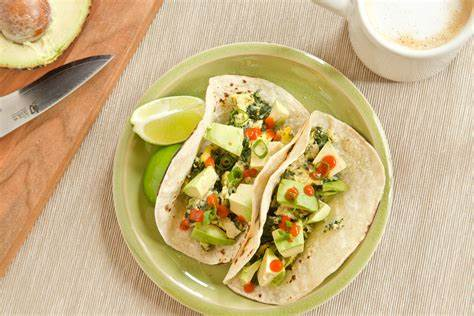
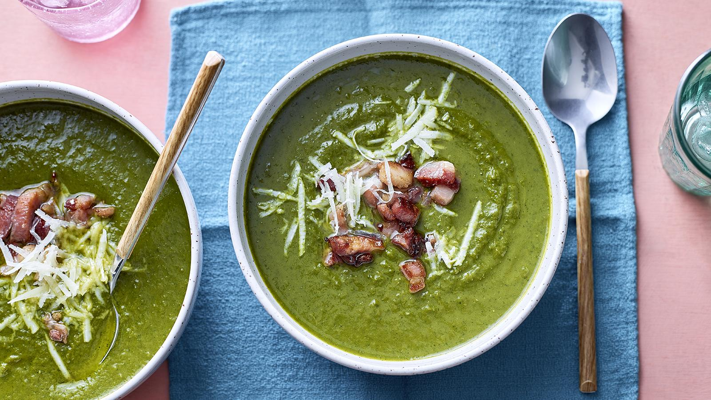
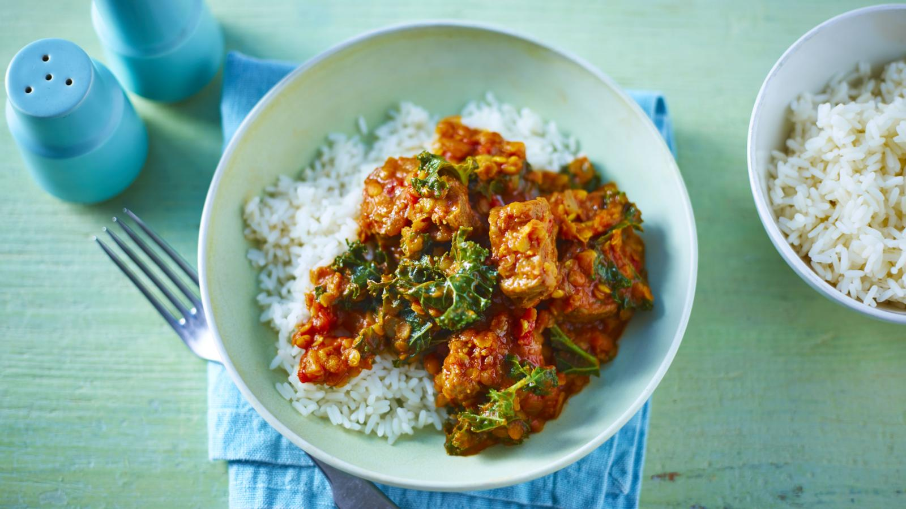

Explore our Seasonal Choices
Check out our selection of seasonal recipes tailored to inspire your cooking adventures.

Spring Breakfast - Spinach & Egg Casserole
- 1/4 of avocado
- 1 teaspoon lime juice
- 2 hard-boiled eggs, chopped
- 2 corn tortillas, warmed
- 1 cup chopped spinach, divided
- 2 tablespoons shredded Cheddar cheese, divided
- 2 tablespoons salsa, divided
Video Tutorial

Spring Lunch - Kale and Bacon Soup
- 2 tbsp olive oil
- 1 onion, roughly chopped
- 2 sweet potatoes, peeled and chopped
- 2 bags kale, no stems 320-400g
- 900ml good-quality vegetable stock
- ½ tsp freshly ground nutmeg
- 150ml milk
- freshly ground black pepper
- 200g bacon lardons
- 40g Parmesan, grated
Video Tutorial

Spring Dinner Recipe
-
2 tbsp sunflower oil
- 2oz lamb neck fillets, trimmed, cut into chunks
- 2 onions, roughly chopped
- 3 large garlic cloves, roughly chopped
- 3 tbsp medium curry paste
- 400g tin chopped tomatoes
- 150g dried split red lentils, rinsed and drained
- 1 tsp salt, plus extra to season
- 75g curly kale (or mature spinach leaves), rinsed, shredded, any tough stalks discarded
- freshly ground black pepper
- steamed rice or naan bread, to serve
Video Tutorial